Backpacking Cone Peak
June 30 2026
Final Stats:
Distance: 23.35 mi
Elevation Gain: 6115 ft
Time: 10h 4m
Highest Point: Cone Peak (5,155 ft)
Route: Kirk Creek→Vicente Flat→Cone Peak→Vicente Flat→Kirk Creek
It was a last-minute decision, but it turned into one of the most memorable trips I've taken.
A few months earlier, a group of alumni and teammates had planned an ambitious bike ride from San Jose to San Luis Obispo. I had decided not to go because I didn't feel fit enough to complete the ride. When it was cancelled at the last minute, a new plan quickly came together—one that would trade bicycles for backpacks.
Unlike previous trips, our planning was quick and efficient. Booking campsites in Big Sur was out of the question, as they often fill up months before the date, and we had a week. Since traditional campsites were fully booked, our only realistic option became wilderness camping. We eventually found a location, and stuck with it.
The plan was for it to be a 2 night trip, with day one being a hike to the campground, day 2 being a hike to the summit and back, and day 3 from the campground to the start. This was a true "sea to summit" hike, as our starting point at Kirk Creek Campground was right next to the ocean.
We left at 10 AM on Saturday, and the drive along the Pacific Coast Highway was relatively uneventful, except for some traffic that slowed us down about 30 minutes. Despite being completely open to the public for the first time in 3 years, construction along the highway is still prevalent.
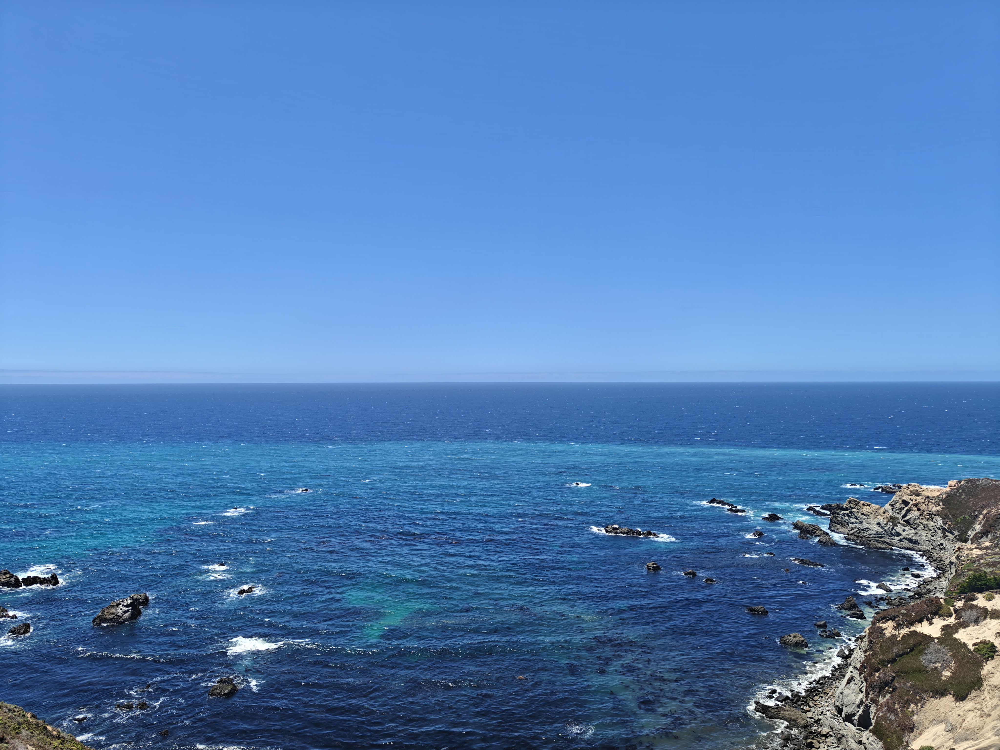
The highlight view from our 30 minute traffic stop. During this time, we got out of our car and stretched our legs after the long ride.
After passing iconic sights like Point Sur and McWay Falls, we pulled over at Kirk Creek Campground, and started our hike along the Vicente Flat Trail. The trail wasted no time. Within the first mile and a half, we had already climbed 1,000 feet. The trail being along a ridge without any shade meant that the views of the Pacific were stunning. After this, we slowly climbed a more rolling section of trail, and the trail transitioned from ocean views to rocky terrain and mountains. This is also when we got our first glimpse of Cone Peak—the summit we would climb the following morning. I had originally planned to take out my camera on this section of trail in order to photograph the coastline, but later decided to conserve battery and memory card space for the next day's summit.
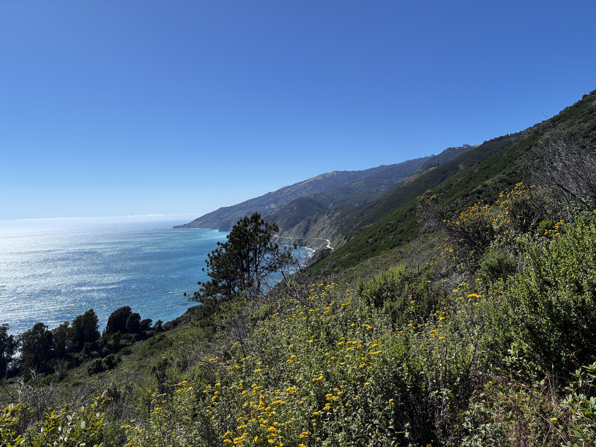
The steep climb up Vicente Flat Trail rewarded us with sweeping views of the coast and the ocean
By the end of the day's hike, the trail descended into a valley full of redwood trees, where Vicente Flat Campground resides. There were about 6 other groups in the campsite when we arrived, but the campground had loads of space and privacy. A creek flowed near our campsite, which would be our water source for the rest of the trip. We arrived at the campsite around 5pm, and quickly set up our tents, filtered water from the creek, made dinner, and settled down for the evening. Tomorrow's climb would be the hardest, but also the most scenic part of the trip.
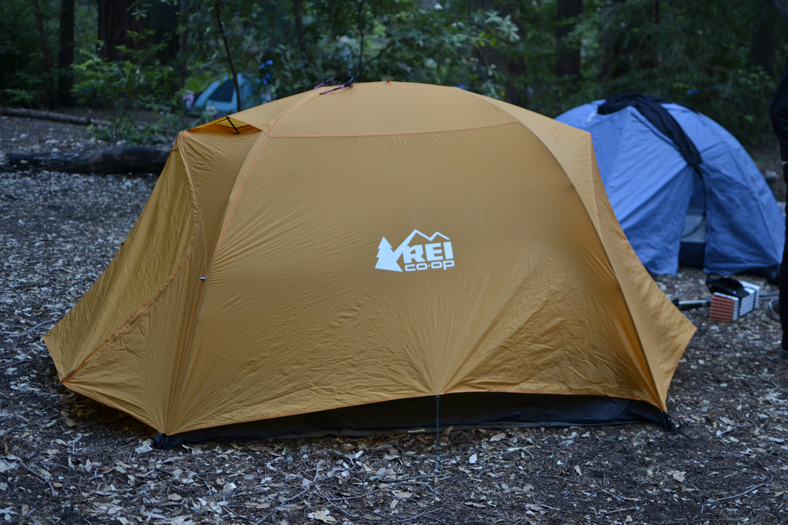
Our campsite after setting up for the evening. The campground was completely shaded, so the weather was always pleasant even during peak heat
We woke up early to a cool morning, and we quickly made our breakfasts. The freeze dried meals I had acquired at REI provided sufficient fuel for the trip, although their lack of calories would be apparent after the trip. After emptying our backpacks of camping equipment, we started the out-and-back hike to Cone Peak with water, lunch, and first aid.
The hike started by ascending out of the valley, following the creek before parting ways with it. The trail has many downed trees blocking its path, and there were a few stream crossings and moments of scrambling. After we arrived at the ridge, the trail became more navigable and rewarded us with a great view of Cone Peak and the surrounding mountains. After a while of climbing up the ridge, the trail descended and joined a fire road. For the first time all morning, we had personal space.
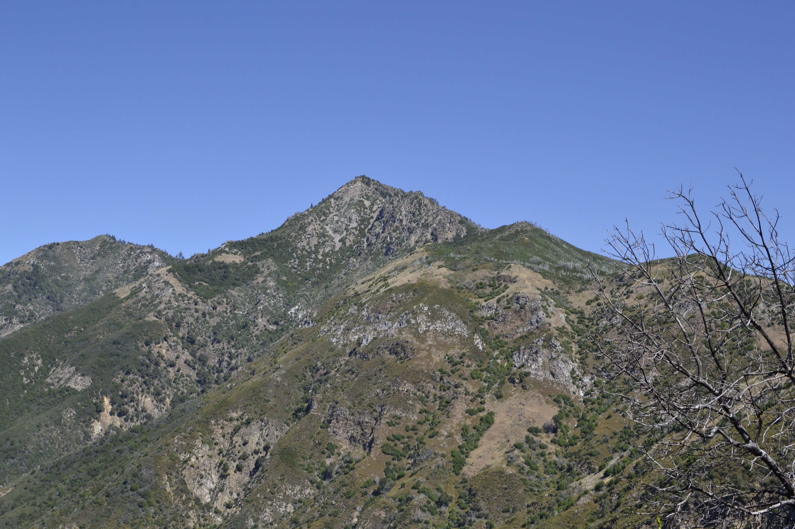
The trail provided us great views of Cone Peak, and the other surrounding peaks
The first section of the hike was full of plant overgrowth and downed trees, but the fire road was a clear and wide path where we could all walk side by side. Our relief was only short-lived, as we quickly turned on to the final summit trail, 2.5 more miles of a narrow trail full of switchbacks.
At this point, we only had about 1500 feet of elevation left to climb, and we were all in high spirits. The final climb had a few rocky sections, but the panoramic views distracted us from our fatigue. At last, we had finally reached the top.
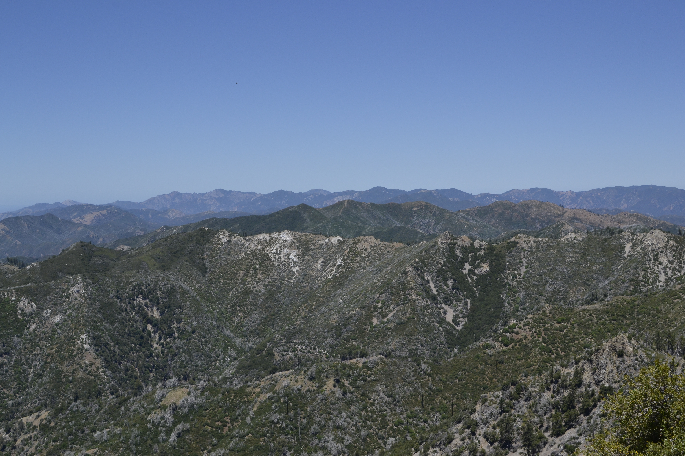
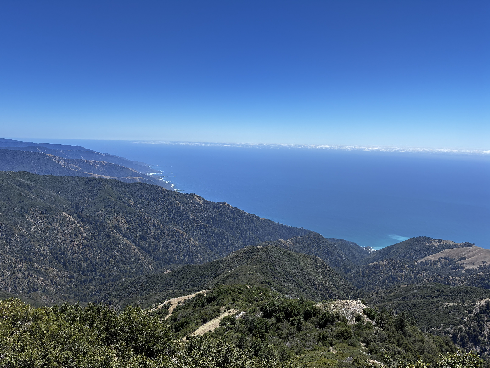
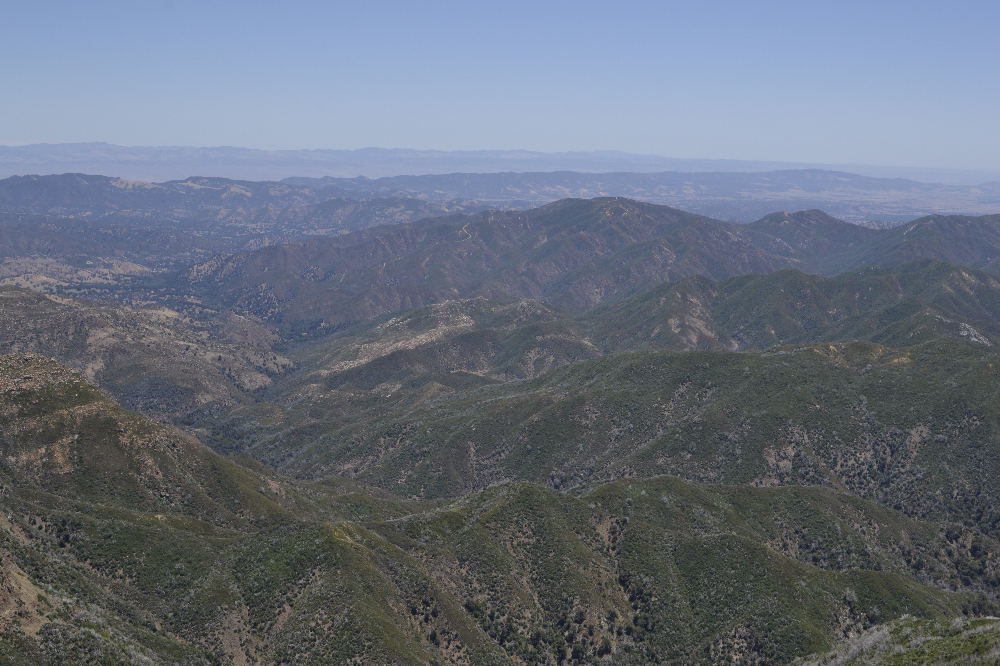
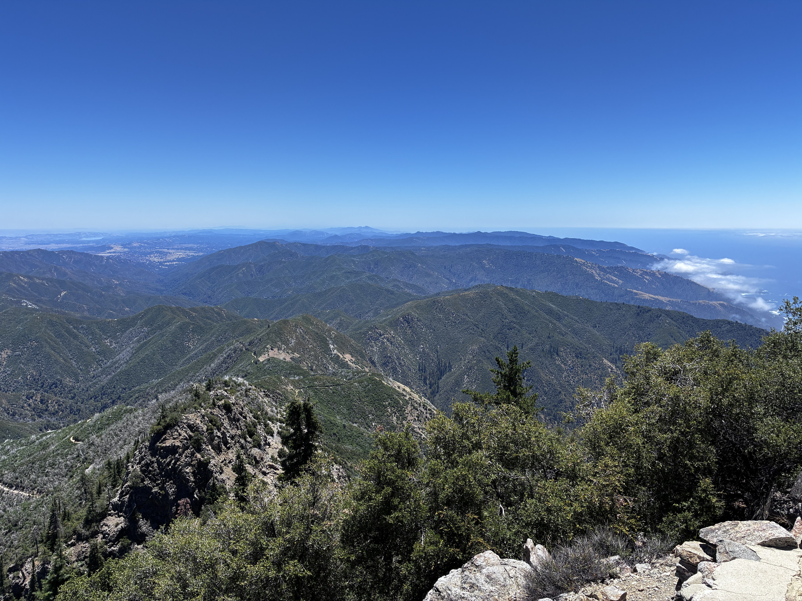
Pictures cannot describe the views from the top. The mix of ocean and mountains is truly breathtaking. This is definitely one of the most scenic lunches I have ever eaten
After many pictures and an hour at the top, we started the descent down to Vicente Flat. This was relatively easy, as we had light backpacks, and the trail wasn't too steep. In an instant, we were back at the campground, ready to check out for the night, or so we thought.
As we approached the campground, we had an idea. Since it was only 3:30 PM, we could just pack up camp and finish the hike today, instead of staying another night. The total hike would be 17 miles, but the rest of the hike was all downhill, so we weren't worried about the hike being strenuous. Within a span of 5 minutes, we chose to head down, finishing the hike on the second day.
Packing up tents and backpacks took about an hour, and we started the hike down. The hike was around 5 miles, with 2,000 feet of descent throughout the hike. This time, we felt the descent. I was carrying a 35-pound backpack, relatively light for backpacking, but I could still feel the pain on my hips, shoulders, and knees, as we descended. The trail had little grip, so I almost fell a few times. Even though descending was a tedious task, we still enjoyed the hike with music and views of the ocean. The good thing about descending in the evening was that we could watch the sunset. By coincidence, our hiking time was perfect in seeing the sunset right as we finished. The last few miles of the hike were done in almost-complete silence, as we embraced the views and the task we had just completed
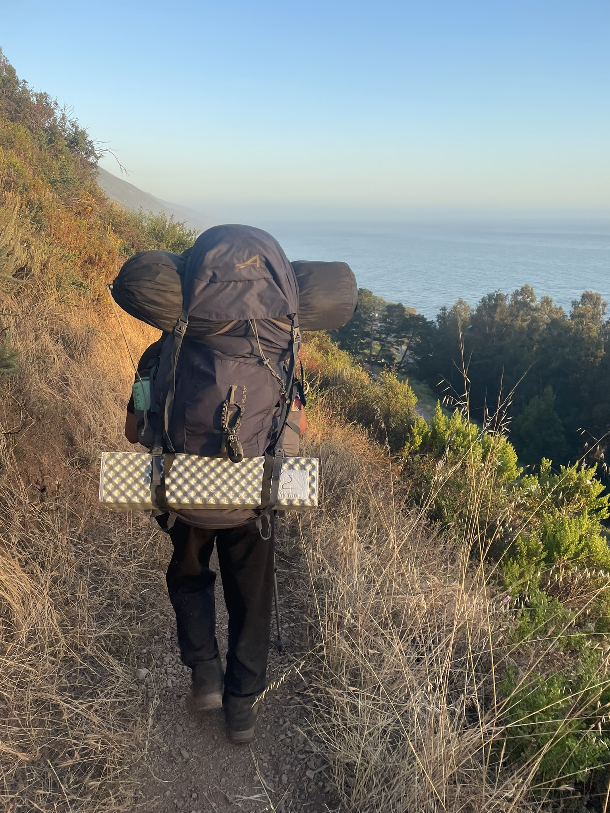
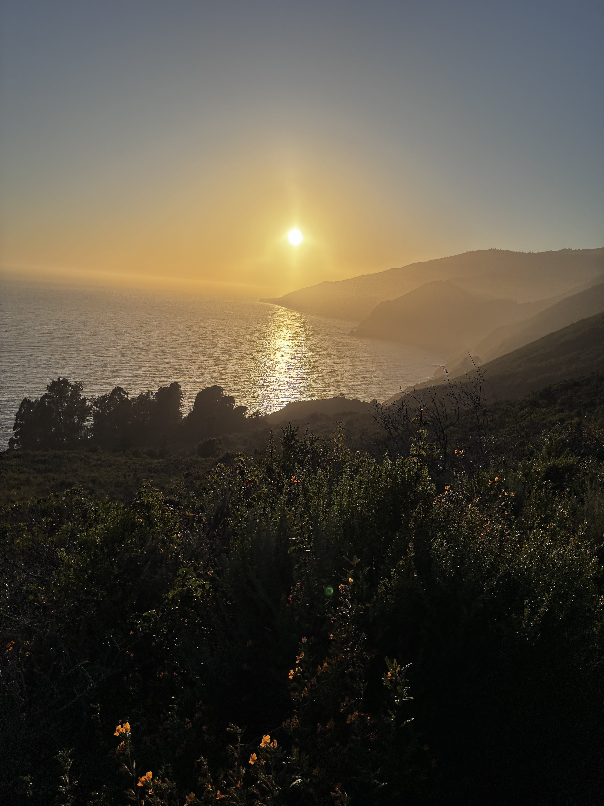
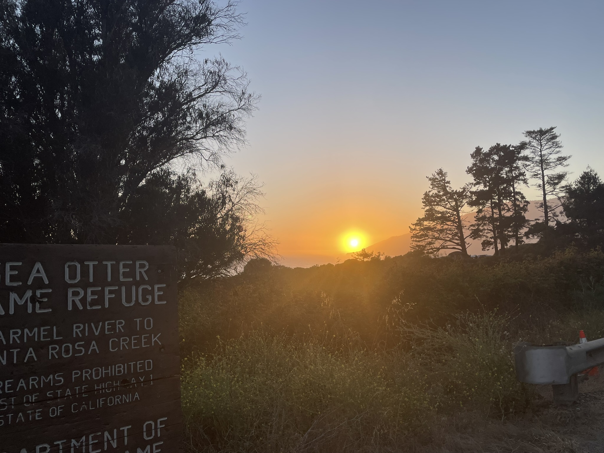
Overall, this is definitely one of the most memorable experiences of this summer. The views, conversations, lack of cell service, and the experiences we had all made this trip something I will never forget—at least in the short term.